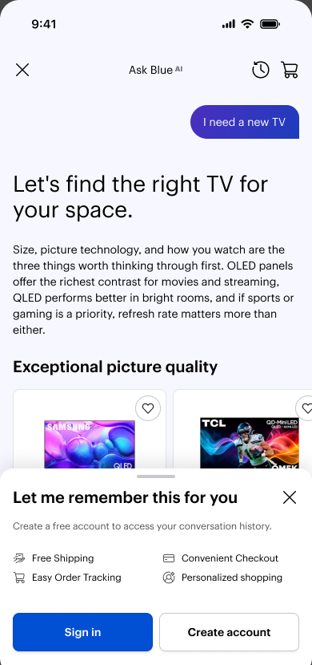
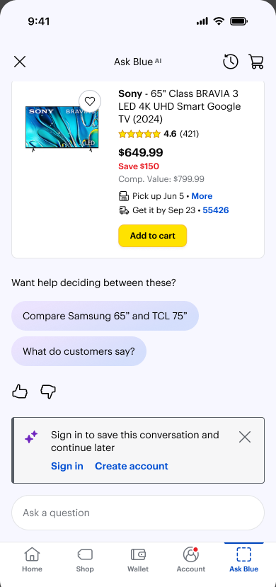
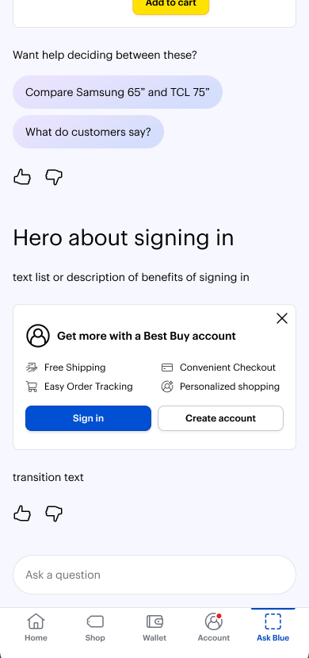
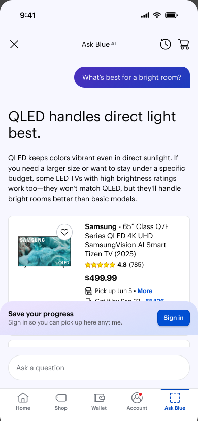
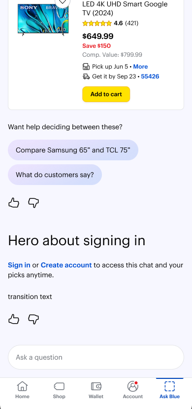
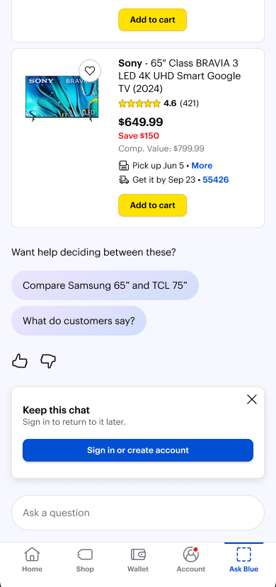
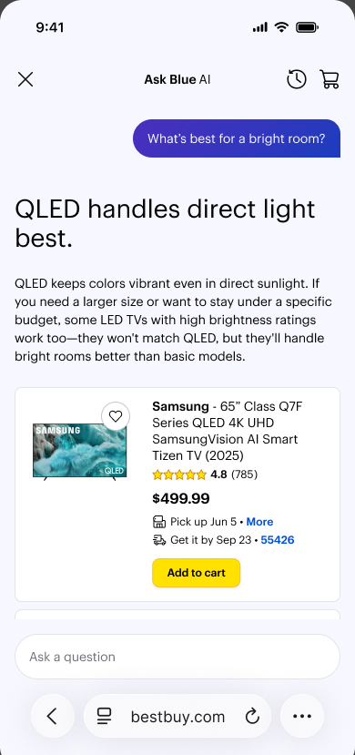
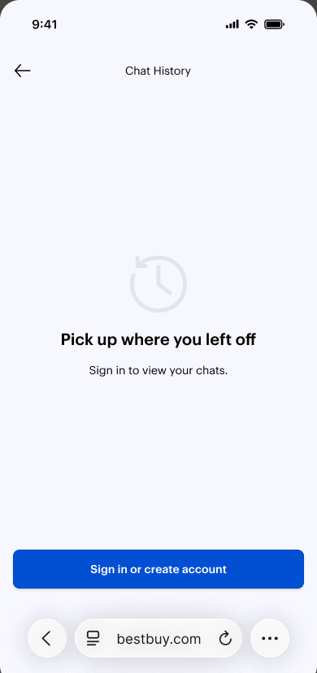
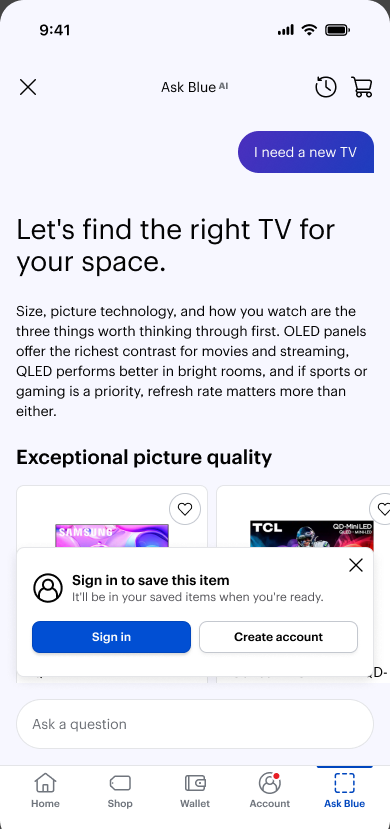
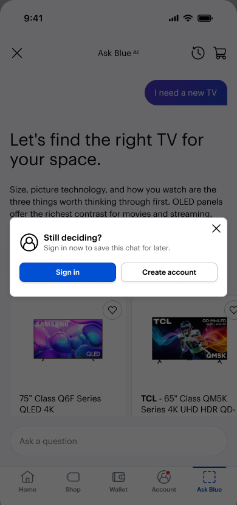

Value before sign-in.
Progressive login lets anonymous shoppers try Ask Blue, Best Buy's Agentic AI shopping assistant, before signing in. The experience introduces sign-in after a useful recommendation or when the shopper requests a feature that needs an account.
The approach: open access to the assistant, make the benefit of sign-in clear, and keep the conversation intact whether the shopper signs in or skips.
- Design ownership
- End-to-end design: problem framing, interaction design, contextual content, prototyping, and engineering handoff.
- Collaboration
- Product and engineering on prompt timing, identity transitions, conversation continuity, and edge cases.
- Scope
- Anonymous access, progressive sign-in, history, and tab-scoped conversations. Wishlist planned for Phase II.
- Duration
- Approximately 1.5 months, from problem framing through design and handoff.
- Delivery status
- Released to employees following two prototype rounds and engineering handoff.
- Public rollout
- Planned before the US holiday season.
Most shoppers could not even try it.
of BestBuy.com web sessions are recognised. Ask Blue previously required shoppers to be recognised before they could interact with the assistant, limiting its reach and adoption.
The opportunity was to connect two goals: help more shoppers discover the assistant's value and give them a meaningful reason to sign in. Sign-in could follow a useful shopping moment rather than become a requirement before exploration.
The shopper's need
Try the assistant, get a relevant recommendation, and decide whether the experience is worth returning to without an up-front sign-in requirement.
The business goal
Broaden Agentic AI adoption and grow recognized sessions while respecting the platform's cost and abuse safeguards.
The design challenge: make sign-in a useful next step without making it a barrier to trying Ask Blue.
Define the behavior before the prompt.
The work began with journey mapping: what shoppers could do anonymously, where identity became necessary, and how the conversation would continue through each transition. These decisions shaped the prompt's timing, placement, and message.
Map the journey
Mapped the three identity states against exploration, history, and saving to separate an optional invitation from an action that requires an account.
Explore the patterns
Prototyped embedded cards, floating cards, popovers, and drawers for four moments: general use, opening history, saving a product, and leaving the chat.
Refine the experience
Two prototype rounds refined the copy, timing, placement, and dismissal behavior, with a focus on making the benefit clear without interrupting the conversation.
Align the decisions
Aligned with product and engineering on the engagement threshold, one-ask-per-session rule, and continuity across sign-in and multiple tabs.

Drawer sheet
Embedded card · compact
Embedded card · benefits
Floating card
Inline textThree identity states. One continuous conversation.
The three identity states define what shoppers can access, when a prompt appears, and what stays intact after sign-in. The distinction is reflected in the interaction, without asking shoppers to understand the underlying tokens.
Visitor
Can start a conversation, explore products, and receive recommendations without signing in.
Recognized
Can access conversation history. Recognition connects the conversation to a known user.
Authenticated
Can complete actions that need authenticated access, such as saving a product to a wishlist in Phase II.
Continuity is the guiding principle. Signing in should not feel like starting over. The active conversation carries through sign-in, while each browser tab keeps its own conversation. Closing and reopening the side panel in the same tab resumes that chat.
The progressive login journey
- Open Ask BlueStart a conversation without signing in.
- Explore productsAsk questions and receive shopping assistance.
- Experience valueReach three shopping turns and receive a product recommendation.
Protect the shopper's momentum: skipping sign-in never restarts the conversation, dismissing a soft nudge is respected for the session, and canceling an account-required action returns the shopper to their chat.
Key design decisions.
Propose three turns, allow the timing to evolve.
Earlier Gift Finder engagement averaged roughly 1.5-2 turns, which highlighted the risk of waiting too long. The current proposal is to show the soft nudge after three shopping turns and at least one product recommendation, once the shopper has experienced value.
The tradeoff: asking sooner could interrupt exploration; waiting until five turns could miss shoppers who leave earlier. Three turns is a starting point, not a permanent rule. The recommendation to engineering was to build the trigger with a configurable turn threshold, allowing the nudge to move to X turns based on future user engagement with Ask Blue AI. Changing the turn count would retain the product-recommendation requirement, skippable interaction, and once-per-session cap.
Separate an invitation from a requirement.
The soft nudge is skippable because browsing does not need an account. History is different: it needs recognition. A distinct account-required pattern explains why sign-in is necessary for that action while preserving a path back to the conversation.
Respect "not now" without hiding the benefit.
The optional ask appears once per session. After dismissal, the shopper can keep going without another interruption. History remains discoverable for visitors, so the benefit of saved conversations becomes clear at the moment they look for it.
Make the message specific to the moment.
An inline card fits the conversation, lighter contextual prompts suit brief interactions, and a drawer supports history access. The copy focuses on what the shopper can keep or do next: retain a chat, pick up where they left off, or save a product. The benefit leads the message, not the login request.
One system, adapted to the moment.
The prompt adapts to the shopper's intent while keeping one promise consistent: choosing not to sign in does not interrupt the active conversation.





Continuity beyond the happy path.
Shoppers may dismiss a prompt, open history, leave, or compare products across several tabs. The design intent for these scenarios is to keep identity requirements clear without making the shopper repeat work.
A soft nudge, then a history gate.
- The shopper receives a recommendation and a soft nudge.
They can sign in or dismiss the invitation and keep shopping. Dismissing it prevents another optional ask in the same session.
- They tap History while still unrecognized.
History requires recognition, so its sign-in gate appears even if the optional nudge was already dismissed.
- They cancel the history gate.
The two interactions stay separate: canceling History returns to chat without changing the shopper's response to the soft nudge.
- They close the BestBuy.com browser tab.
This closes the page containing the Ask Blue side panel, not just the panel itself. Leaving is a separate moment from requesting an account-required feature.
- They return and request History again.
If they are still unrecognized, History asks them to sign in again. The requirement belongs to the action, not to how many prompts they have already seen.
The principle: a repeated gate should explain a consistent requirement, not feel like escalating pressure to sign in. The shopper always has a clear way back to shopping.
Sign in once. Keep every conversation distinct.
A shopper is comparing products through five anonymous Ask Blue conversations in five BestBuy.com tabs. They sign in through Tab C. The intended experience is for the other tabs to recognize that change without interrupting any conversation.
Keep each chat, typed draft, and incoming response intact.
What changes
The other tabs reflect the signed-in state. Redundant prompts go away, history becomes available, and a light confirmation can reassure the shopper that the conversation is saved.
What stays intact
Each tab keeps its own conversation. No reset, no merged chats, and no lost drafts. If a response is arriving, sign-in should not interrupt it.
Delivery and next steps.
The project moved from problem framing through two prototype rounds and engineering handoff over approximately 1.5 months. Deliverables included sign-in patterns, contextual copy, dismissal rules, and continuity flows connecting anonymous exploration to account-based actions.
The experience is now available to employees, with public rollout planned before the US holiday season. Public-launch results are not available yet. The success measures focus on whether the experience brings more shoppers into Ask Blue and gives them a reason to return:
Recognized sessions
More anonymous shoppers choosing to sign in after experiencing the assistant's value.
AI engagement
Deeper conversations and more shoppers returning to use Ask Blue.
AI-led add-to-cart
More product recommendations leading to add-to-cart within the conversation.
Key takeaway
The central decision was where sign-in belonged in the journey, not just how the prompt should look. Separating an optional ask from a genuine identity requirement balances adoption with shopper control while keeping the conversation continuous.
Ahead of public rollout, the next design questions are whether shoppers understand the two prompt patterns, whether the three-turn threshold catches the right moment, and how confidently they can pick up their conversations after sign-in.
Sign-in should help shoppers keep value, not prevent them from discovering it.